계약하신 사장님께 드리는 책
QR 메뉴판
사장님 안내서
쓰는 법 · 가게 운영 · 손님에게 하는 말 · 홍보 요령
한 장씩 그림을 보며 천천히 따라 하세요.
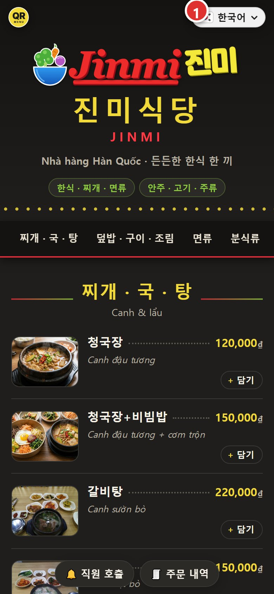
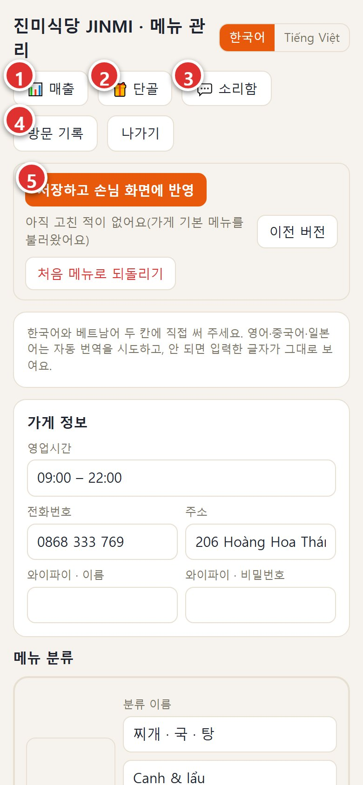
QR MENU · qrmenuasia.com한국어판 · 2026년 11월
이 책 보는 법
🔴
빨간 동그라미 번호
그림 속 빨간 번호와 옆 설명의 번호가 같아요. 번호 순서대로 보세요.
💡
초록 상자 = 꿀팁
알아 두면 장사에 도움이 되는 요령이에요.
⚠️
빨간 상자 = 조심
자주 하는 실수예요. 꼭 읽어 주세요.
🗣
말풍선 = 손님에게 하는 말
그대로 읽어 주시면 돼요. 직원 교육에도 쓰세요.
💡 이렇게 읽으세요처음부터 다 읽지 않아도 돼요. 오늘 필요한 장만 펴서 그림을 보며 휴대폰으로 같이 눌러 보세요. 직원 교육 때는 2장과 8장을 같이 보세요.
차례
- 1
시작하기QR 메뉴판이 뭔지, 우리 가게에 무엇이 좋아지는지
- 2
손님 화면 알아보기언어 · 사진 · 장바구니 · 주문서 · 직원 호출 · 주문 내역
- 3
사장님 화면: 메뉴 고치기로그인 · 가격 · 품절 · 사진 · 가게 정보 · 오늘의 할인
- 4
주방 화면과 영수증 프린터주문 받기 · 배치도 · 프린터 연결
- 5
숫자 보기: 매출과 방문날짜별 · 음식별 매출, 방문 리포트
- 6
단골 만들기도장 적립 · 소리함 · 구글 리뷰
- 7
가게 운영 요령QR 카드 놓는 곳 · 직원 교육 · 하루 점검표
- 8
손님에게 하는 말상황별 말하기 예문
- 9
가게 홍보 요령SNS 그림 · 구글 지도 · Zalo · 페이스북
- 10
자주 묻는 질문 · 문제가 생겼을 때소리 안 남 · 프린터 · 도장 · 연락처
01
시작하기
QR 메뉴판은 손님 휴대폰 안에 들어가는 우리 가게 메뉴판이에요.
어렵지 않아요. 이 장만 읽어도 오늘 바로 쓸 수 있어요.
이 장에서 알아볼 것
- QR 메뉴판은 어떻게 쓰는 건가요?
- 우리 가게에 무엇이 좋아지나요?
- 우리 가게에는 어떤 기능이 켜져 있나요?
- 첫날 꼭 해 볼 5가지
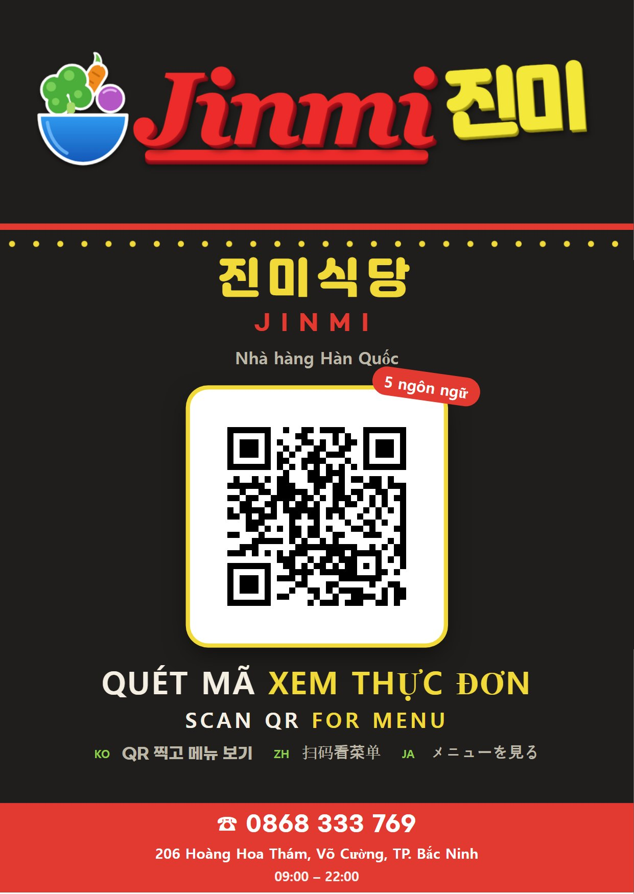
테이블에 놓는 QR 카드 (예: 진미식당)
1-1QR 메뉴판, 이렇게 써요
손님은 앱을 깔 필요가 없어요. 휴대폰 카메라만 있으면 돼요.
🪑손님이 자리에 앉아요
›
📷테이블의 QR 카드를 휴대폰 카메라로 비춰요
›
📱화면에 뜬 주소를 누르면 메뉴판이 열려요
›
🍲사진을 보고 골라 주문해요
우리 가게 메뉴판 주소
가게마다 주소가 하나씩 있어요.
https://가게이름.qrmenuasia.com
예) 진미식당 → jinmi.qrmenuasia.com
💡 꿀팁이 주소를 가게 Zalo·페이스북 소개란에 붙여 두세요. 가게에 오기 전에도 손님이 메뉴를 볼 수 있어요.
📌 알아 두세요테이블마다 놓는 QR 카드에는 테이블 번호가 들어 있어요. 그래서 손님이 번호를 따로 쓰지 않아도 주문서에 저절로 들어가요.
⚠️ 조심QR 카드를 다른 테이블로 옮기면 번호가 틀려져요. 카드는 꼭 제자리에 두세요.
1-2우리 가게에 좋아지는 8가지
🌏
외국 손님도 혼자 주문
한국어·영어·중국어·일본어·베트남어 5개 언어로 보여요. 손님 휴대폰 언어에 맞춰 저절로 바뀌어요.
📸
사진 보고 바로 고르기
음식 사진을 누르면 크게 보여요. "이게 뭐예요?" 질문이 줄어요.
✏️
가격은 휴대폰으로 바로
가격이 바뀌어도 메뉴판을 다시 인쇄하지 않아요. 고치고 저장하면 1분 안에 바뀌어요.
🚫
품절 표시
재료가 떨어지면 체크 한 번. 손님 화면에 '품절'이 떠서 헛주문이 없어요.
🧾
주문서로 실수 줄이기
손님이 고른 음식이 직원 언어로 크게 정리돼요. 잘못 알아듣는 일이 줄어요.
🔔
직원 호출
물·반찬·계산서를 버튼으로 불러요. 손님이 손을 들고 기다리지 않아요.
🎁
단골 도장
종이 쿠폰 없이 휴대폰에 도장이 쌓여요. 손님이 다시 와요.
📊
매출·방문 숫자
어떤 음식이 잘 팔리는지, 몇 명이 메뉴판을 봤는지 숫자로 봐요.
💡 한 줄 요약종이 메뉴판의 일(보여 주기)에, 직원의 일 일부(주문 받기·부르기)와 사장님 수첩(매출·단골)을 더한 것이 QR 메뉴판이에요.
1-3우리 가게에 켜져 있는 기능
기능은 세 가지로 나뉘어요. 표의 색 이름표를 보세요.
처음부터 켜짐 말씀하시면 켜 드려요 사장님 화면에서 직접 켜요
| 기능 | 켜는 법 | 이 책 어디에 |
|---|
| 메뉴판 · 5개 언어 · 사진 | 처음부터 켜짐 | 2장 |
| 장바구니 · 직원에게 보여주기 | 처음부터 켜짐 | 2장 |
| 메뉴·가격·품절·사진 고치기 | 처음부터 켜짐 | 3장 |
| 주방으로 주문 보내기 · 직원 호출 · 주문 내역 | 말씀하시면 켜 드려요 | 2장 · 4장 |
| 주방 화면 · 영수증 프린터 | 말씀하시면 켜 드려요 | 4장 |
| 매출 보기 | 주방 주문을 켠 날부터 쌓여요 | 5장 |
| 방문 기록 | 처음부터 켜짐 | 5장 |
| 단골 도장 · 오늘의 할인 배너 | 사장님이 직접 | 3장 · 6장 |
| 소리함(손님 별점) | 사장님이 직접 | 6장 |
✅ 첫날 꼭 해 볼 5가지
- 테이블마다 번호가 맞는 QR 카드를 놓아요.
- 사장님 휴대폰으로 QR을 직접 찍어 메뉴판을 열어 봐요.
- 음식 하나를 담고 '직원에게 보여주기'까지 눌러 봐요. (2장)
- 사장님 화면에 로그인해서 가격 하나를 보기만 해요. (3장)
- 직원들을 모아 이 책 2장을 같이 넘겨 봐요.
02
손님 화면 알아보기
손님이 무엇을 보는지 알아야 설명도 쉽게 할 수 있어요.
사장님 휴대폰으로 직접 따라 눌러 보세요.
이 장에서 알아볼 것
- 첫 화면과 언어 바꾸기
- 메뉴 찾기와 사진 크게 보기
- 음식 담기와 주문서
- 직원에게 보여주기 · 주방으로 보내기
- 직원 호출 · 우리 테이블 주문 내역
2-1첫 화면과 언어 바꾸기
QR을 찍으면 맨 위에 가게 간판(또는 로고)과 가게 이름, 그 아래로 메뉴가 나와요.
- 언어 버튼 — 지금 보이는 언어예요. 누르면 다른 언어를 고를 수 있어요.
📌 저절로 맞춰져요베트남 손님 휴대폰은 베트남어로, 한국 손님 휴대폰은 한국어로 처음부터 열려요. 손님이 따로 할 일이 없어요.
국기와 함께 5개 언어가 펼쳐져요.
🇰🇷 한국어 · 🇬🇧 English · 🇨🇳 中文 · 🇯🇵 日本語 · 🇻🇳 Tiếng Việt
"오른쪽 위 버튼을 누르시면 원하시는 언어로 바뀌어요."
💡 꿀팁음식 이름 아래에 베트남어 이름이 작게 같이 나와요(가게에 따라 다름). 직원이 한국어를 몰라도 손님 화면을 보고 어떤 음식인지 알 수 있어요.
2-2메뉴 찾기와 사진 크게 보기
메뉴 위쪽 띠에 분류 이름(찌개·국·탕, 덮밥…)이 있어요. 누르면 그 자리로 바로 내려가요.
- 음식 사진 — 누르면 크게 보여요.
- + 담기 — 누르면 장바구니에 들어가요. 한 번 더 누르면 2개가 돼요.
💡 꿀팁사진이 있는 메뉴가 더 잘 팔려요. 사진이 없는 메뉴는 3장을 보고 사진을 올려 보세요.
사진이 화면 가득 크게 나오고, 아래에 음식 이름이 나와요.
아무 곳이나 누르면 다시 메뉴 목록으로 돌아가요.
"사진을 누르시면 크게 보실 수 있어요."
2-3음식 담기와 주문서
- 장바구니 막대 — 담은 개수와 합계가 보여요. '주문서 보기'를 누르면 주문서가 열려요.
- 직원 호출 — 물·반찬 등을 부르는 버튼이에요. (2-5에서)
- 주문 내역 — 우리 테이블이 주문한 것이 보여요. (2-5에서)
📌 알아 두세요2번·3번 버튼은 '주방으로 주문 보내기'를 켠 가게에만 보여요.

주문서
- 수량 — − / + 로 개수를 바꿔요.
- 요청사항 — "맵게", "앞접시 2개" 처럼 써요.
- 주방으로 주문 보내기 — 주방 화면으로 주문이 바로 가요. (켠 가게만)
- 직원에게 보여주기 — 직원에게 화면을 보여 주는 방식이에요.
📌 테이블 번호QR 카드로 들어오면 테이블 번호가 미리 채워져 있어요.
2-4직원에게 보여주기 · 주방으로 보내기

'직원에게 보여주기'를 누른 화면
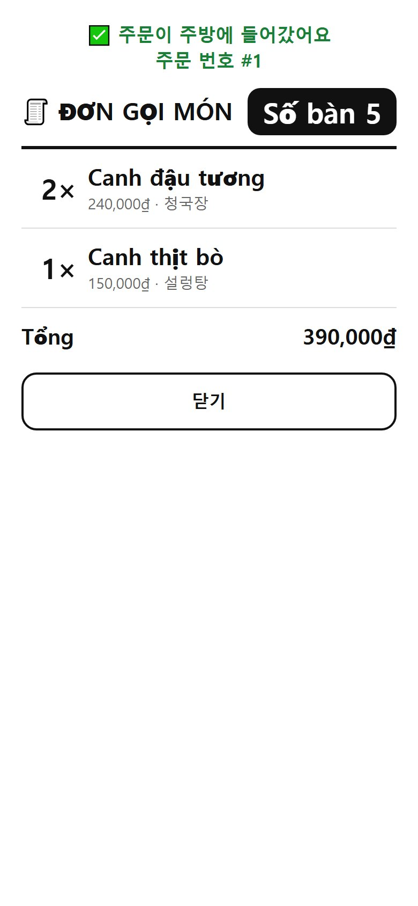
'주방으로 주문 보내기'를 누른 뒤
👀 직원에게 보여주기
손님이 휴대폰을 직원에게 보여 줘요. 음식 이름이 직원 언어(베트남어)로 크게, 손님 언어는 작게 나와요. 테이블 번호와 합계도 보여요. 직원은 이걸 보고 주문을 받아 적으면 돼요.
📨 주방으로 주문 보내기
주문이 주방 화면으로 바로 가요. 손님 화면에 "주문이 주방에 들어갔어요"와 주문 번호가 나와요. 직원이 자리에 가지 않아도 돼요. (4장)
"다 고르셨으면 '주문서 보기'를 누르고 '주방으로 주문 보내기'를 눌러 주세요. 바로 주방에 들어가요."
⚠️ 조심'직원에게 보여주기'만 하면 주방에 저절로 가지 않아요. 직원이 꼭 받아 적거나 주방에 전해야 해요.
2-5직원 호출 · 우리 테이블 주문 내역
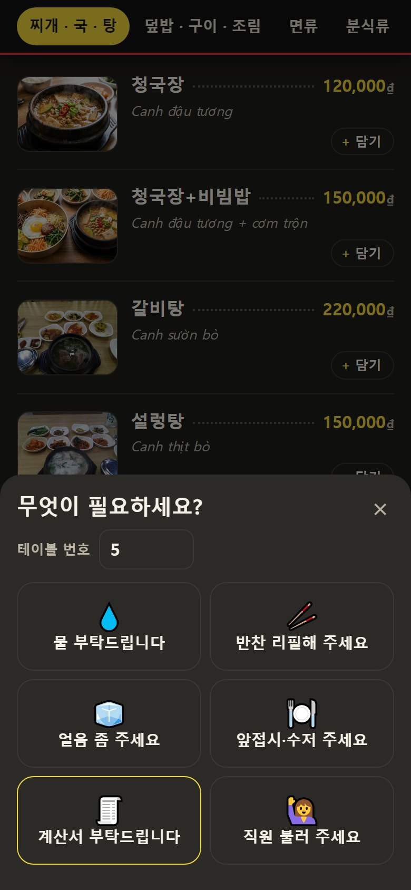
'직원 호출'을 누른 모습
6가지 버튼 중 하나를 누르면 주방 화면에 알림이 떠요.
💧 물 · 🥢 반찬 리필 · 🧊 얼음 · 🍽 앞접시·수저 · 🧾 계산서 · 🙋 직원 부르기
📌 알아 두세요같은 버튼은 30초 동안 다시 못 눌러요. 장난으로 여러 번 누르는 것을 막아요.
💡 꿀팁알림이 오면 주방 화면에서 [확인]을 눌러 주세요. 확인할 때까지 30초마다 '띵' 소리가 나요.
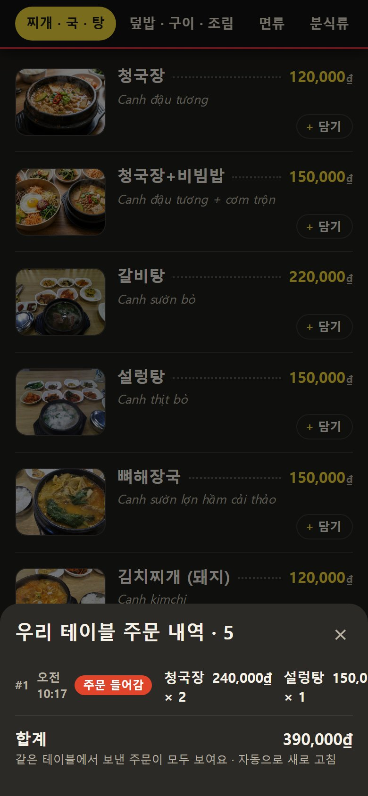
'주문 내역'을 누른 모습
같은 테이블 일행이 각자 휴대폰으로 주문한 것까지 모두 한곳에 보여요.
음식마다 지금 상태가 나와요:
주문 들어감 → 만드는 중 → 나왔어요
"주문 내역을 누르시면 음식이 어디까지 됐는지 보실 수 있어요."
03
사장님 화면:
메뉴 고치기
가격·품절·사진은 사장님이 휴대폰으로 직접 고쳐요.
저장을 누르면 손님 화면이 1분 안에 바뀌어요.
이 장에서 알아볼 것
- 사장님 화면 들어가기
- 첫 화면 둘러보기
- 가격 고치기 · 품절 표시 · 사진 바꾸기
- 설명·BEST 표시 · 가게 정보
- 잘못 고쳤을 때 되돌리기
- 오늘의 할인 배너
3-1사장님 화면 들어가기
저희가 보내 드린 사장님 화면 주소를 누르세요.
qrmenuasia.com/owner/?shop=가게아이디
- 비밀번호 — 저희가 따로 알려 드린 가게 비밀번호를 넣어요.
- 들어가기 — 누르면 사장님 화면이 열려요.
💡 꿀팁: 홈 화면에 추가주소를 연 뒤 브라우저 메뉴(⋮)에서 '홈 화면에 추가'를 누르면, 앱처럼 아이콘이 생겨요. 다음부터 한 번에 들어와요.
⚠️ 조심비밀번호는 믿을 수 있는 사람에게만 알려 주세요. 8번 틀리면 1시간 동안 막혀요. 창을 닫거나 오래(12시간) 지나면 다시 넣어야 해요.
3-2첫 화면 둘러보기
맨 위 오른쪽 한국어 / Tiếng Việt 버튼으로 화면 글자를 바꿀 수 있어요. 베트남 직원에게 맡길 때 쓰세요.
- 📊 매출 — 날짜별·음식별 매출 (5장)
- 🎁 단골 — 도장 적립, 오늘의 할인 배너 (3-6, 6장)
- 💬 소리함 — 손님 별점과 한마디 (6장)
- 방문 기록 — 메뉴판을 본 사람 수 (5장)
- 저장하고 손님 화면에 반영 — 고친 다음 꼭 누르는 버튼이에요.
⚠️ 가장 많이 하는 실수고치기만 하고 5번 '저장'을 안 누르는 것이에요. 저장을 안 누르면 손님 화면은 그대로예요. 위에 "저장하지 않은 변경이 있어요"가 보이면 아직 저장 전이에요.
3-3가격 고치기 · 품절 · 사진
- 사진 — 지금 손님에게 보이는 사진이에요.
- 메뉴 이름 — 위 칸은 한국어, 아래 칸은 베트남어예요.
- 품절 · 사진 올리기 · 사진 지우기 버튼이 있는 줄이에요.
그 아래 가격(₫ 또는 ₩) 칸이 있어요.
💡 시가 메뉴가격 칸을 비워 두면 손님 화면에 "가격 문의"로 나와요.
💰 가격 고치기
- 고칠 메뉴의 가격 칸을 눌러요.
- 숫자만 써요. 예) 120000
- 맨 위 '저장하고 손님 화면에 반영'을 눌러요.
- 내 휴대폰으로 손님 메뉴판을 열어 확인해요.
🚫 품절 표시
- 그 메뉴의 '품절' 칸에 체크해요.
- '저장하고 손님 화면에 반영'을 눌러요.
- 손님 화면에 흐리게 + 빨간 '품절'이 떠요.
- 재료가 들어오면 체크를 빼고 다시 저장해요.
3-4사진 바꾸기 · 설명 · BEST 표시
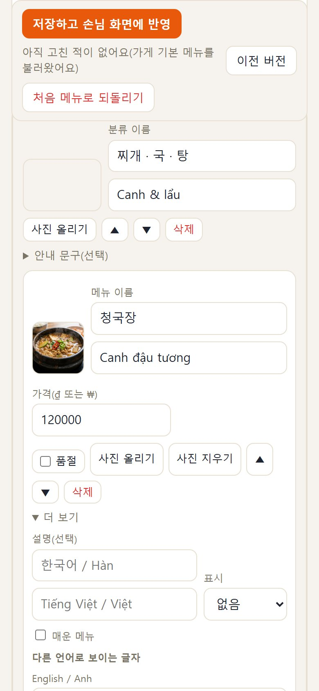
'더 보기'를 누른 모습
📷 사진 바꾸기
- 그 메뉴의 '사진 올리기'를 눌러요.
- 휴대폰 사진첩에서 음식 사진을 골라요.
- '저장하고 손님 화면에 반영'을 눌러요.
📝 '더 보기'에서 할 수 있는 일
· 설명 — "2~3인분", "많이 매워요" 같은 짧은 설명
· 표시 — BEST · 신메뉴 · 추천 이름표
· 매운 메뉴 — 체크하면 "🌶 매콤" 표시
· 다른 언어로 보이는 글자 — 영어·중국어·일본어
📌 번역은 저절로한국어·베트남어 두 칸만 쓰시면 영어·중국어·일본어는 저장할 때 자동 번역을 해요. 잘 안 되면 쓴 글자가 그대로 보여요.
💡 잘 팔리는 음식 사진 찍는 법① 창가처럼 밝은 곳에서 ② 가로로 ③ 위에서 비스듬히(45도) ④ 음식이 화면을 꽉 채우게 ⑤ 김이 날 때 바로 찍으세요.
3-5가게 정보 · 잘못 고쳤을 때
영업시간 · 전화번호 · 주소 · 와이파이(이름·비밀번호)를 여기서 고쳐요. 손님 메뉴판 아래쪽에 나와요.
💡 꿀팁와이파이를 적어 두면 손님이 직원에게 묻지 않고 바로 연결해요. 쉬는 날·명절 영업시간도 미리 바꿔 두세요.
📌 메뉴 추가 · 순서 바꾸기분류 아래 '+ 메뉴 추가'로 새 메뉴를, '+ 분류 추가'로 새 분류를 만들어요. ▲ ▼로 순서를 바꾸고, 삭제로 지워요.
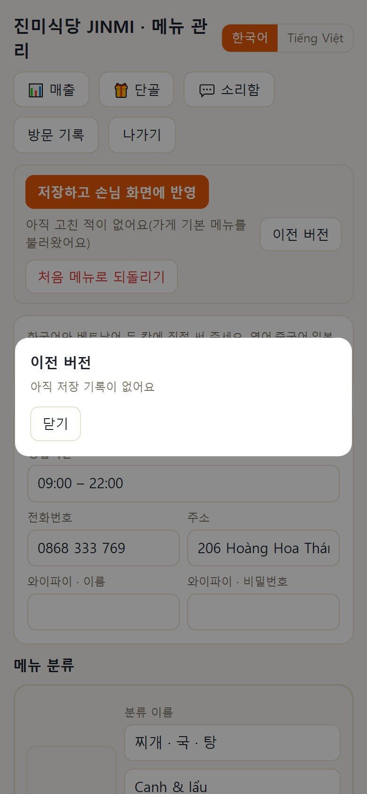
'이전 버전'을 누른 모습
↩️ 되돌리는 방법 2가지
이전 버전 — 저장할 때마다 기록이 남아요. 목록에서 날짜를 골라 '이 버전으로'를 누르면 그때로 돌아가요.
처음 메뉴로 되돌리기 — 저희가 처음 만들어 드린 메뉴판으로 돌아가요. 이전 버전 기록은 그대로 남아요.
💡 안심하세요잘못 고쳐도 언제든 되돌릴 수 있어요. 겁내지 말고 눌러 보세요.
3-6오늘의 할인 배너
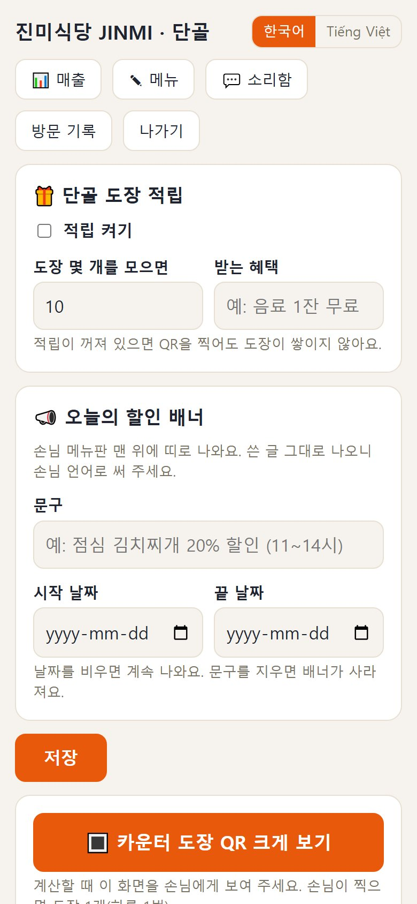
🎁 단골 버튼을 누른 화면
손님 메뉴판의 메뉴 목록 바로 위에 📣 띠로 할인 소식을 보여 줘요. 점심 할인, 새 메뉴 행사에 좋아요.
- 사장님 화면에서 🎁 단골을 눌러요.
- '오늘의 할인 배너'의 문구 칸에 써요.
예) 점심 김치찌개 20% 할인 (11~14시)
- 시작 날짜·끝 날짜를 골라요. 비우면 계속 나와요.
- 아래 '저장'을 눌러요.
📌 알아 두세요배너 문구는 쓴 글자 그대로 나와요(자동 번역 없음). 한국어와 베트남어를 같이 쓰면 좋아요. 예) 점심 20% 할인 · Giảm 20% buổi trưa
⚠️ 조심배너를 끄려면 문구를 지우고 저장하세요. 단골 도장(같은 화면 위쪽)은 6장에서 자세히 알려 드려요.
04
주방 화면과
영수증 프린터
손님이 '주방으로 주문 보내기'를 누르면 주방 태블릿(또는 휴대폰)에 주문이 떠요.
종이에 받아 적지 않아도 돼요.
이 장에서 알아볼 것
- 주방 화면 켜기
- 새 주문 받기 · 만드는 중 · 완료
- 손님 호출과 불만 알림
- 배치도로 테이블 한눈에 보기
- 기기 설정(소리·프린터)
- 영수증 프린터 연결하기
📌 이 기능은 말씀하시면 켜 드려요주방 주문을 켜면 저희가 주방 화면 주소와 6자리 PIN(비밀번호)을 알려 드려요.
4-1주방 화면 켜기
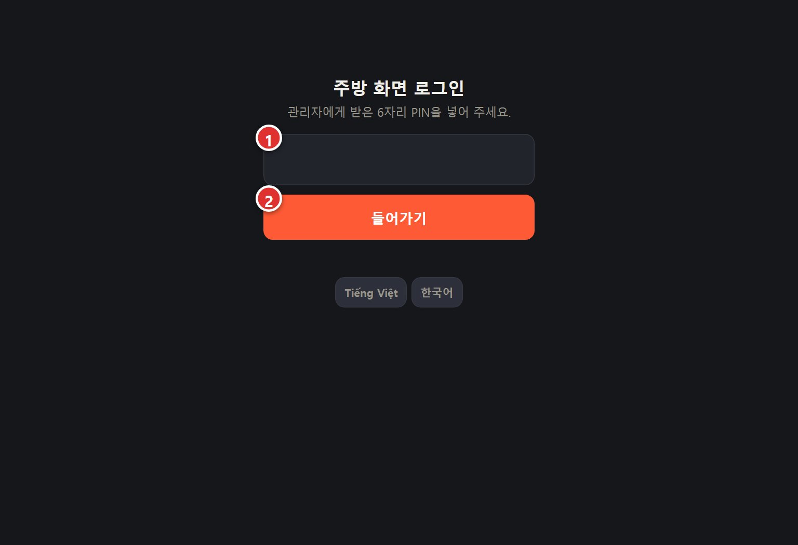
주방 태블릿에서 처음 보는 화면
- PIN 6자리를 넣어요.
- 들어가기를 눌러요.
그다음 '▶ 시작' 버튼을 꼭 눌러 주세요. 그래야 새 주문 소리가 켜지고 화면이 꺼지지 않아요.
qrmenuasia.com/kitchen/?shop=가게아이디
💡 꿀팁한 번 들어가면 60일 동안 PIN을 다시 넣지 않아요. 태블릿은 충전기를 꽂아 두고 주방에서 잘 보이는 곳에 세워 두세요.
⚠️ 조심PIN은 주방 직원에게만 알려 주세요. 직원이 그만두면 저희에게 말씀해 주세요. PIN을 새로 만들고 다른 기기는 모두 로그아웃시켜 드려요.
4-2새 주문 받기
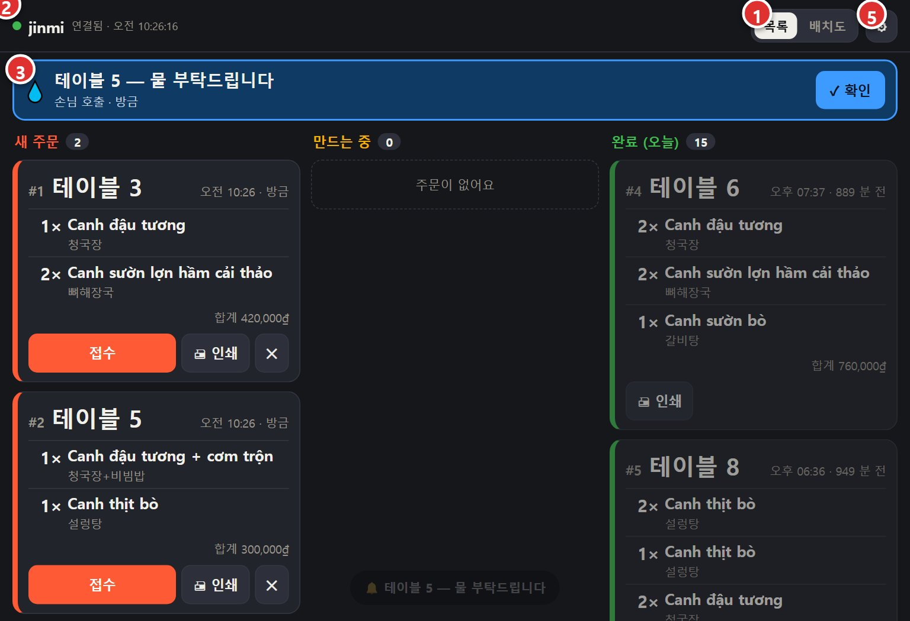
새 주문이 들어온 모습
- 목록 / 배치도 — 보는 방법을 바꿔요. (4-5)
- 손님 호출 띠 — 물·계산서 등 손님 부름. (4-4)
- 새 주문 칸 — 들어온 주문이 빨간 테두리로 떠요.
- 빨간 '접수' 버튼 — 주문을 확인했다는 뜻이에요.
- ⚙ 설정 — 소리·프린터를 바꿔요. (4-6)
📌 소리새 주문이 오면 '딩동' 소리가 나고 화면이 깜빡여요. '접수'를 누를 때까지 20초마다 다시 울려요.
💡 주문 카드테이블 번호 · 몇 분 전 · 음식(베트남어 크게, 한국어 작게) · 요청사항 · 합계 · [접수] [🖨 인쇄] [✕ 취소]
4-3만드는 중 → 완료
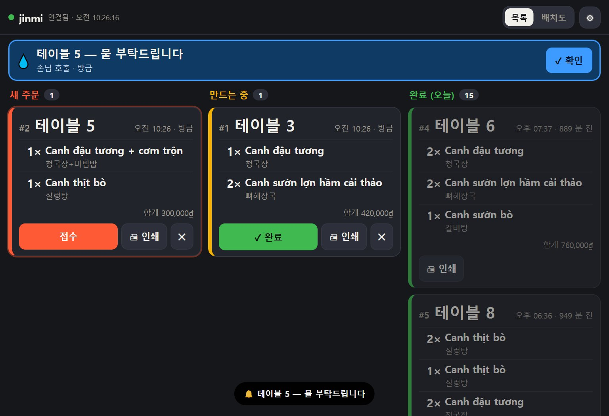
'접수'를 누르면 가운데 '만드는 중' 칸으로 옮겨가요
🔴새 주문
[접수] 누르기
›
🟡만드는 중
요리가 끝나면 [완료]
›
🟢완료 (오늘)
오늘 끝난 주문이 모여요
📌 손님 폰도 같이 바뀌어요주방에서 누르면 손님의 '주문 내역'에도 주문 들어감 → 만드는 중 → 나왔어요로 저절로 바뀌어요.
⚠️ 취소할 때[취소]를 누르면 한 번 더 물어봐요. 취소한 주문은 매출에서 빠지고 손님 주문 내역에서도 사라져요. 잘못 눌렀으면 [되돌리기]를 누르세요.
4-4손님 호출 · 불만 알림
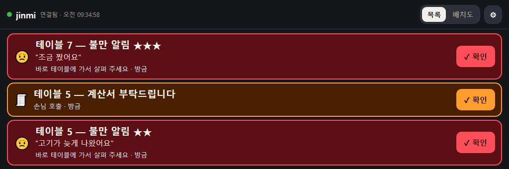
주방 화면 맨 위에 뜨는 띠
| 띠 색 | 뜻 | 할 일 |
|---|
| 🔵 파랑 | 물 · 반찬 리필 · 얼음 · 앞접시·수저 · 직원 호출 | 가져다드리고 [확인] |
| 🟠 주황 | 계산서 부탁드립니다 | 계산서를 가져가고 [확인] |
| 🔴 빨강 | 불만 알림 — 소리함에 별 1~3개를 준 손님 (6장) | 바로 테이블에 가서 무엇이 불편했는지 여쭙고 [확인] |
📌 소리호출은 주문 벨보다 짧은 '띵띵' 소리예요. [확인]을 누를 때까지 30초마다 울려요. 1시간이 지나면 저절로 사라져요.
💡 불만 알림은 기회예요손님이 가게를 나가기 전에 사과하고 해결하면, 나쁜 리뷰 대신 다시 오는 손님이 돼요.
4-5배치도: 테이블 한눈에 보기
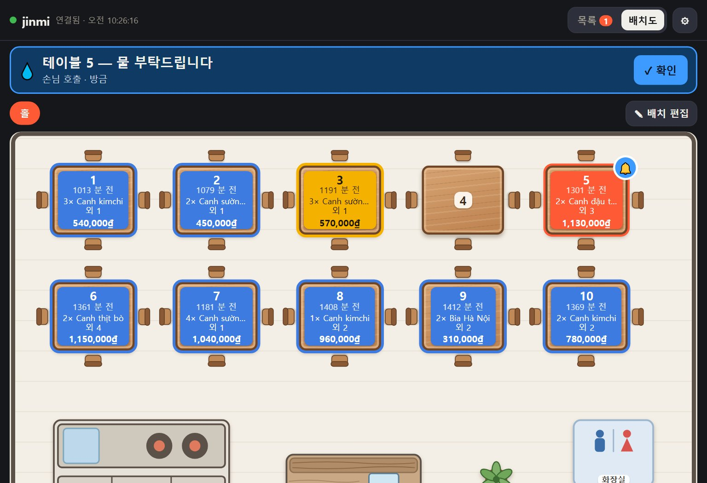
위쪽 '배치도'를 누른 모습
🎨 테이블 테두리 색
⚪ 회색 — 빈 자리
🔴 빨강(깜빡) — 새 주문
🟡 노랑 — 만드는 중
🔵 파랑 — 음식 나감(식사 중)
테이블을 누르면 그 테이블 주문이 열려요. 손님이 나가면 [자리 정리]를 눌러 빈 자리로 만들어요.
✎ 우리 가게 모양으로 바꾸기
- ✎ 배치 편집을 눌러요.
- 테이블을 손가락으로 끌어 옮겨요. + 테이블, + 장식(주방·카운터·화장실·계단·화분…), + 구역(1층·2층·야외)
- 저장을 눌러요.
⚠️ 조심배치도의 테이블 번호는 QR 카드의 테이블 번호와 같아야 주문이 그 자리에 떠요.
4-6기기 설정: 소리 · 프린터
설정은 기기마다 따로 저장돼요. 주방 태블릿과 카운터 휴대폰을 다르게 둘 수 있어요.
- 프린터 — 블루투스 프린터(RawBT 앱) / 브라우저 인쇄 / 인쇄 안 함
- 용지 폭 — 58mm 또는 80mm (프린터 종이 폭)
- 소리 종류 — 딩동 벨 · 차임 · 전화벨 · 삐삐삐(시끄러운 주방) · 실로폰
- 소리 크기 — 보통 / 크게 / 아주 크게
- 시험 인쇄 · 소리 시험 — 잘 되는지 확인해요
⚠️ 소리가 작을 때화면에서 '아주 크게'로 해도 기기 볼륨이 작으면 소용없어요. 태블릿 옆 볼륨 버튼으로 소리를 최대로 올려 두세요. 무음(진동) 모드도 꺼 주세요.
💡 기기 이름'주방 1', '카운터'처럼 이름을 붙여 두면 헷갈리지 않아요.
4-7영수증 프린터 연결하기

주문 영수증 예시
주문이 오면 이렇게 주방용 영수증을 뽑을 수 있어요. 테이블 번호가 크게, 음식은 베트남어·한국어로 나와요.
📌 프린터가 없어도 괜찮아요주방 화면만 보고 요리해도 돼요. 이때는 설정에서 '인쇄 안 함'을 고르세요.
📱 안드로이드 태블릿·휴대폰
- 플레이스토어에서 무료 앱 RawBT를 설치해요.
- 블루투스 프린터: 휴대폰 블루투스에서 프린터 연결(비밀번호는 보통 0000 또는 1234).
랜선 프린터: RawBT에서 '네트워크'로 프린터 IP를 넣어요.
- RawBT에서 프린터를 골라요.
- 주방 화면 ⚙ → 프린터 '블루투스 프린터 (RawBT 앱)' → 시험 인쇄.
💻 PC · 아이패드
- PC에 프린터를 먼저 연결해요(프린터 회사 프로그램 설치).
- 주방 화면 ⚙ → 프린터 '브라우저 인쇄'.
- [🖨 인쇄]를 누르고 인쇄 창에서 그 프린터를 골라요.
💡 어려우시면프린터 이름(뒷면 스티커)을 사진 찍어 보내 주세요. 연결 방법을 맞춰 알려 드려요.
05
숫자 보기:
매출과 방문
감으로 하던 장사를 숫자로 확인해요.
잘 팔리는 음식, 바쁜 시간, 손님 나라가 보여요.
이 장에서 알아볼 것
- 매출 달력 보기
- 잘 팔린 음식 · 시간대별 주문
- 방문 리포트 읽는 법
- 숫자를 장사에 쓰는 요령
5-1매출 달력
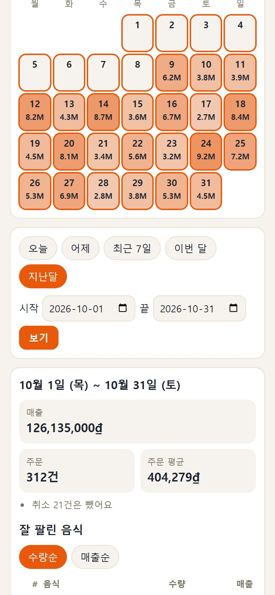
'지난달'을 누른 결과
📅 달력
칸마다 그날 매출(예: 8.2M = 820만 동)과 주문 수가 나와요. 색이 진할수록 많이 판 날이에요. 날짜를 누르면 그날만 보여요. ‹ › 로 달을 바꿔요.
⏱ 빠른 버튼
오늘 · 어제 · 최근 7일 · 이번 달 · 지난달. 시작·끝 날짜를 직접 골라도 돼요(최대 93일). 결과에 매출 · 주문 수 · 주문 평균이 나와요.
5-2잘 팔린 음식 · 바쁜 시간
잘 팔린 음식 — 수량순 / 매출순으로 순위를 봐요.
시간대별 주문 — 막대가 높은 시간이 바쁜 시간이에요.
날짜별 매출 — 기간 안에서 날마다 비교해요.
CSV 내려받기 — 엑셀로 열어 장부에 붙일 수 있어요.
⚠️ 이렇게 세요손님이 '주방으로 주문 보내기'로 보낸 주문만 세요. 직원이 손으로 받은 주문, '직원에게 보여주기', Zalo 주문은 들어가지 않아요. 취소한 주문은 빠져요. 주방 주문을 켠 날부터 쌓여요.
💡 숫자 쓰는 요령① 1~3등 음식은 BEST 표시·좋은 사진 ② 거의 안 팔리는 음식은 사진을 바꾸거나 메뉴에서 빼기 ③ 손님 없는 시간에 '오늘의 할인 배너'(3-6) 걸기
5-3방문 리포트
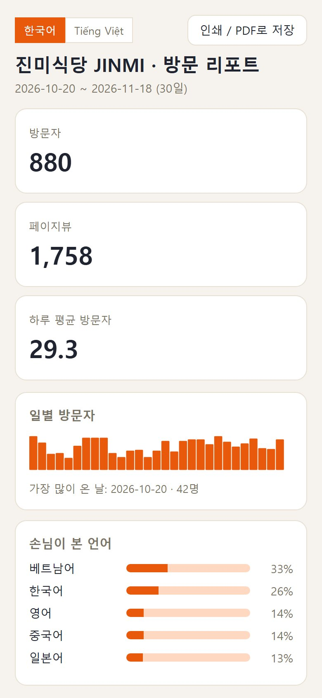
'방문 기록'을 누르면 새 창으로 열려요
| 항목 | 뜻 |
|---|
| 방문자 | 메뉴판을 연 사람 수(같은 사람은 하루 1번만 세요) |
| 페이지뷰 | 메뉴판이 열린 횟수 |
| 손님이 본 언어 | 어느 나라 손님이 많은지 알 수 있어요 |
| 어디서 들어왔나 | QR 스캔 · 가게 찾기 · 직접 · 구글 등 |
💡 꿀팁'인쇄 / PDF로 저장'으로 한 달 리포트를 보관하세요. 외국어 손님이 많으면 그 언어로 홍보하면 좋아요(9장).
06
단골 만들기
새 손님을 데려오는 것보다 온 손님을 다시 오게 하는 게 쉬워요.
도장과 소리함, 두 가지 도구를 알려 드려요.
이 장에서 알아볼 것
- 단골 도장 켜기
- 카운터 도장 QR로 도장 찍어 주기
- 혜택 사용 · 휴대폰을 바꾼 손님
- 시크릿 고객 소리함 켜기
- 손님 의견 읽고 대처하기 · 구글 리뷰
6-1단골 도장 켜기
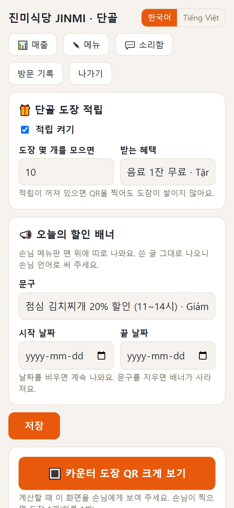
사장님 화면 → 🎁 단골
종이 쿠폰 대신 손님 휴대폰에 도장이 쌓여요. 손님 전화번호는 받지 않아요.
- 사장님 화면에서 🎁 단골을 눌러요.
- '적립 켜기'에 체크해요.
- 도장 몇 개를 모으면(3~20개) 칸에 숫자를 써요. 예) 10
- 받는 혜택을 써요. 예) 음료 1잔 무료 · Tặng 1 ly nước
- 저장을 눌러요.
⚠️ 가장 많이 하는 실수2단계 '적립 켜기' 체크를 빠뜨리고 저장하는 것이에요. 그러면 꺼진 채로 저장돼요. 저장 뒤 손님 메뉴판에 '🎁 도장' 줄이 보이는지 꼭 확인하세요.
6-2도장 찍어 주기
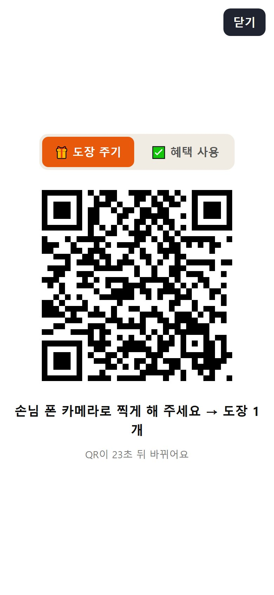
'카운터 도장 QR 크게 보기'
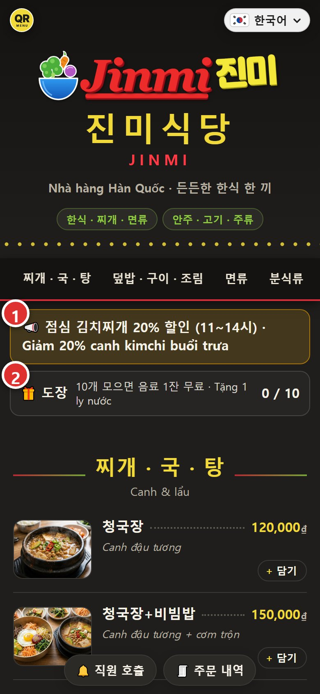
손님 메뉴판에 생긴 줄
- 손님이 계산할 때 카운터 휴대폰에서 '카운터 도장 QR 크게 보기'를 눌러요.
- 🎁 도장 주기 탭의 QR을 손님에게 보여 줘요.
- 손님이 휴대폰 카메라로 찍으면 도장 1개!
① 📣 할인 배너와 ② 🎁 도장 줄이 손님 메뉴판에 보여요.
📌 알아 두세요QR은 1분마다 바뀌어요. 사진으로 찍어 다른 사람에게 보내도 소용없어요. 한 손님은 하루에 1번만 받을 수 있어요.
"계산하실 때 이 QR을 찍으시면 도장이 쌓여요. 10개 모으시면 음료 한 잔 드려요."
6-3혜택 사용 · 휴대폰을 바꾼 손님
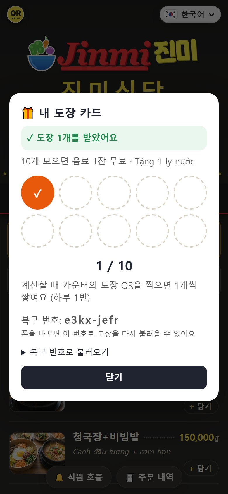
도장을 받은 손님 화면
손님 화면에 "도장 1개를 받았어요"와 도장 카드가 떠요.
🎉 도장을 다 모은 손님
- 카운터 QR 화면에서 ✅ 혜택 사용 탭을 눌러요.
- 손님이 그 QR을 찍으면 도장이 빠지고 혜택이 사용돼요.
- 약속한 혜택(음료 등)을 드려요.
📱 휴대폰을 바꾼 손님
도장 카드 아래 복구 번호(예: abcd-efgh)가 있어요. 새 휴대폰에서 '복구 번호로 불러오기'에 넣으면 도장이 돌아와요.
💡 꿀팁도장 개수는 너무 많지 않게(5~10개). 처음 손님이 "금방 모으겠네" 하고 느껴야 다시 와요.
6-4시크릿 고객 소리함 켜기

사장님 화면 → 💬 소리함
손님이 별점(1~5)과 한마디를 사장님에게만 몰래 남겨요. 다른 손님에게는 안 보여요.
- 사장님 화면에서 💬 소리함을 눌러요.
- '소리함 켜기'에 체크해요.
- 구글 리뷰 주소를 넣어요. (모르시면 저희가 찾아 드려요)
- 저장을 눌러요.
📌 누가 쓸 수 있나요?테이블 QR 카드로 들어온 손님만 쓸 수 있어요. 그래서 경쟁 가게나 장난으로 가짜 불만을 보낼 수 없어요.
6-5손님이 보는 소리함
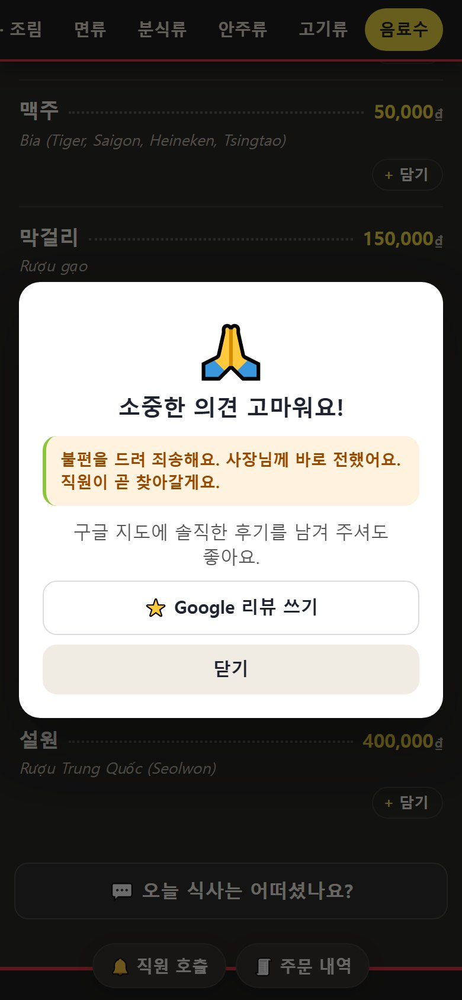
③ 보낸 뒤 (별 2개)
- 메뉴판 아래 '💬 오늘 식사는 어떠셨나요?' 버튼이 늘 있어요. 손님이 '계산서'를 부르면 저절로 한 번 떠요.
- 별을 누르고 한마디를 써서 보내기.
- 별 1~3개면 손님에게 사과 문구가 나오고 주방 화면에 빨간 불만 알림이 떠요(4-4). 모든 손님에게 구글 리뷰 쓰기 버튼이 똑같이 보여요.
6-6의견 읽기 · 구글 리뷰 지키기
7일 / 30일을 골라 평균 별점과 별점별 수를 봐요. 1~3점 의견은 빨간 줄로 표시돼요.
😟 낮은 별점이 오면
- 바로 테이블에 가서 "불편한 점이 있으셨나요?" 하고 여쭤요.
- 변명하지 말고 사과 → 바로 고칠 수 있는 건 바로 고쳐요.
- 같은 불만이 여러 번 오면 직원 회의에서 이야기해요.
⚠️ 구글 규칙 — 꼭 지키세요① 별점 높은 손님에게만 리뷰를 부탁하면 안 돼요. ② 리뷰를 써 주면 할인·음료·도장을 주는 것도 안 돼요. ③ 가짜 리뷰도 안 돼요. 어기면 구글이 리뷰를 지우거나 가게 정보를 막을 수 있어요. 그래서 소리함은 모든 손님에게 똑같이 리뷰 버튼을 보여 줘요.
07
가게 운영 요령
도구는 매일 쓰는 습관이 있어야 힘을 내요.
QR 카드 놓는 법부터 하루 점검표까지 정리했어요.
이 장에서 알아볼 것
- QR 카드, 어디에 어떻게 둘까?
- 직원 교육 10분
- 하루 점검표(문 열기 전 · 영업 중 · 마감)
- 일주일 · 한 달 점검
7-1QR 카드 놓는 법
👍 이렇게 두세요
- 손님이 앉자마자 보이는 곳 — 테이블 가운데, 수저통·냅킨통 옆
- 카드 받침이나 아크릴 꽂이에 세워서
- QR 부분이 접히거나 젖지 않게 코팅하기
- 테이블 번호와 카드 번호가 같은지 매주 확인
👎 이러면 안 찍혀요
· 조명이 비쳐 반짝이는 곳 · 기름때가 묻은 카드 · 너무 낮거나 구석진 곳 · QR 위에 스티커나 가격표
💡 가게 입구에도 하나문 앞이나 계산대에 큰 QR을 하나 두면, 기다리는 손님이 미리 메뉴를 골라요. (이 QR은 테이블 번호 없는 것으로 부탁하세요)
7-2직원 교육 10분
새 직원이 오면 이 표대로 10분만 같이 해 보세요. 이 책 2장·4장·8장을 펴 놓고 하면 쉬워요.
| 순서 | 무엇을 | 어떻게 |
|---|
| 1 | 손님 화면 알기 (2분) | 직원 휴대폰으로 QR을 찍어 음식 담기 → 주문서 → '직원에게 보여주기'까지 눌러 봐요. |
| 2 | 주문서 읽기 (1분) | '직원에게 보여주기' 화면의 베트남어 큰 글자 · 테이블 번호 · 요청사항을 읽어요. |
| 3 | 주방 화면 (3분) | 시험 주문 1개를 보내고 [접수] → [완료]를 눌러 봐요. 호출 띠의 [확인]도 눌러 봐요. |
| 4 | 배치도 (1분) | 손님이 나가면 [자리 정리] 누르기. |
| 5 | 손님에게 하는 말 (2분) | 8장의 말하기를 소리 내어 두세 번 읽어요. |
| 6 | 도장 · 소리함 (1분) | 계산할 때 카운터 도장 QR 보여 주기, 빨간 불만 알림이 오면 바로 테이블로 가기. |
⚠️ 직원에게 알려 주지 않는 것사장님 화면 비밀번호와 매출은 직원에게 보이지 않게 하세요. 주방 화면에는 매출이 나오지 않아요.
💡 사장님 화면 글자를 베트남어로사장님 화면 오른쪽 위 'Tiếng Việt'를 누르면 베트남 관리자도 메뉴를 고칠 수 있어요.
7-3하루 점검표
이 쪽을 인쇄해서 주방이나 카운터에 붙여 두세요.
🌅 문 열기 전
- 주방 태블릿 켜기 · 충전기 꽂기
- 주방 화면 '▶ 시작' 누르기
- ⚙ → 소리 시험
- 프린터 종이 · 시험 인쇄
- 오늘 없는 재료 → 품절 체크 · 저장
- QR 카드 제자리 · 깨끗한지
🍽 영업 중
- 새 주문은 바로 [접수]
- 음식 나가면 [완료]
- 호출 띠는 바로 [확인]
- 빨간 불만 알림 → 바로 테이블로
- 재료 떨어지면 바로 품절
- 손님 나가면 [자리 정리]
🌙 마감
- 안 끝난 주문 정리(완료·취소)
- 품절 체크 풀기 · 저장
- 📊 오늘 매출 보기
- 💬 소리함 의견 읽기
- 태블릿 충전
7-4일주일 · 한 달 점검
| 언제 | 할 일 |
|---|
| 매주 월요일 | 📊 최근 7일 — 잘 팔린 음식 1~3등에 BEST 표시 · 💬 소리함 7일 평균 별점 보기 · QR 카드 번호 확인 |
| 매달 1일 | 📊 지난달 매출 · 방문 리포트 저장 · 안 팔리는 메뉴 사진 바꾸거나 빼기 · 가격 바뀐 것 고치기 · 이달 할인 배너 계획 |
| 새 메뉴 나올 때 | 사진 찍기(3-4) → '+ 메뉴 추가' → 신메뉴 표시 → 할인 배너로 알리기 → SNS 올리기(9장) |
08
손님에게 하는 말
처음 보는 손님은 QR을 어색해할 수 있어요.
짧고 친절한 한마디면 충분해요. 그대로 읽어 주세요.
이 장에서 알아볼 것
- 자리 안내할 때 · 휴대폰이 어려운 손님
- 외국 손님 · 주문 확인 · 품절
- 음식이 늦을 때 · 계산할 때 · 도장
- 불만이 있을 때 · 배웅할 때
📌 이렇게 보세요위는 한국어, 가운데는 베트남어(베트남 손님·직원용), 아래는 영어(다른 외국 손님용)예요.
8-1자리 안내 · 주문할 때
🪑 자리에 앉으셨을 때
"테이블의 QR을 휴대폰 카메라로 찍으시면 사진 메뉴판이 나와요. 거기서 바로 주문하실 수 있어요."
"Anh/chị quét mã QR trên bàn bằng camera điện thoại là xem được thực đơn có hình. Có thể gọi món ngay trên đó ạ."
"Scan the QR code on the table with your phone camera to see our photo menu. You can order right there."
👵 휴대폰이 어려운 손님
"제가 도와드릴게요. 카메라를 켜서 여기 네모에 대 보세요. … 네, 이 노란 주소를 누르시면 돼요."
"Để em giúp ạ. Anh/chị mở camera, hướng vào ô vuông này… Dạ, bấm vào đường link màu vàng là được ạ."
"Let me help you. Open the camera and point it at this square… Yes, now tap the link."
🌏 외국 손님
"오른쪽 위 버튼을 누르시면 영어·중국어·일본어로도 보실 수 있어요."
"Bấm nút góc trên bên phải là đổi được sang tiếng Anh, Trung, Nhật ạ."
"Tap the button at the top right to change the language."
🧾 주문을 다 고르셨을 때
"아래 '주문서 보기'를 누르고 '주방으로 주문 보내기'를 눌러 주세요. 바로 주방에 들어가요."
"Anh/chị bấm 'Xem đơn' ở dưới rồi bấm 'Gửi đơn vào bếp' nhé. Bếp nhận được ngay ạ."
"Tap 'View order' at the bottom, then 'Send order to kitchen'. The kitchen gets it right away."
8-2품절 · 음식이 늦을 때 · 호출
🚫 품절일 때
"죄송해요, 오늘은 그 메뉴 재료가 다 떨어졌어요. 대신 ○○ 어떠세요? 손님들이 많이 찾으세요."
"Xin lỗi, hôm nay món đó hết rồi ạ. Anh/chị thử món ○○ nhé? Món này khách gọi nhiều lắm ạ."
"Sorry, that dish is sold out today. How about ○○? It's very popular."
⏳ 음식이 언제 나오냐고 물을 때
"지금 만들고 있어요. '주문 내역'을 누르시면 어디까지 됐는지 보실 수 있어요."
"Bếp đang làm rồi ạ. Anh/chị bấm 'Món đã gọi' là xem được món đang tới đâu ạ."
"It's being cooked now. Tap 'Our orders' to see the status."
🔔 물·반찬이 필요할 때
"필요하신 게 있으면 '직원 호출'을 누르세요. 물, 반찬, 계산서 모두 버튼으로 부르실 수 있어요."
"Cần gì anh/chị cứ bấm 'Gọi nhân viên' nhé. Nước, thêm đồ ăn kèm, tính tiền đều có nút ạ."
"If you need anything, tap 'Call staff' — water, side dishes or the bill."
✅ 주문을 확인할 때 (직원에게 보여주기)
"휴대폰 화면 한번 보여 주시겠어요? 김치찌개 2개, 설렁탕 1개 맞으시죠?"
"Anh/chị cho em xem màn hình được không ạ? 2 canh kimchi, 1 canh thịt bò, đúng không ạ?"
"May I see your screen? Two kimchi stews and one beef soup, right?"
8-3계산 · 도장 · 불만 · 배웅
🎁 계산할 때 (도장)
"이 QR을 찍으시면 도장이 쌓여요. 10개 모으시면 음료 한 잔 드려요. 전화번호는 필요 없어요."
"Anh/chị quét mã này để tích điểm nhé. Đủ 10 dấu được tặng 1 ly nước. Không cần số điện thoại ạ."
"Scan this to collect a stamp. Ten stamps get you a free drink. No phone number needed."
💬 의견을 부탁할 때
"오늘 식사 어떠셨는지 메뉴판 아래 버튼으로 한마디 남겨 주시면 큰 도움이 돼요. 사장님만 봐요."
"Anh/chị để lại vài lời ở nút cuối thực đơn giúp quán nhé. Chỉ chủ quán đọc thôi ạ."
"We'd love your feedback — use the button at the bottom of the menu. Only the owner reads it."
😟 불만이 있을 때
"불편을 드려 정말 죄송합니다. 무엇이 불편하셨는지 말씀해 주시면 바로 고칠게요."
"Thành thật xin lỗi anh/chị. Anh/chị cho em biết chưa hài lòng chỗ nào, quán sửa ngay ạ."
"We're very sorry. Please tell us what went wrong and we'll fix it right away."
👋 배웅할 때
"감사합니다! 메뉴판 주소를 저장해 두시면 다음엔 오시기 전에 미리 고르실 수 있어요."
"Cảm ơn anh/chị! Lưu lại đường link thực đơn, lần sau có thể chọn món trước khi đến ạ."
"Thank you! Save our menu link and choose your dishes before your next visit."
⚠️ 이 말은 안 돼요"좋은 리뷰 써 주시면 할인해 드려요" ✕ — 구글 규칙 위반(6-6)이에요.
09
가게 홍보 요령
메뉴판 주소 하나로 가게 안과 밖, 인터넷까지 홍보할 수 있어요.
돈이 들지 않는 방법만 모았어요.
이 장에서 알아볼 것
- SNS 그림 쓰는 법
- 구글 지도에 메뉴판 연결하기
- Zalo · 페이스북 쓰는 법
- 할인 배너 아이디어 달력
- 하면 안 되는 홍보
9-1SNS 그림 쓰는 법

정사각형 — 페이스북·인스타그램·Zalo 게시글
계약하실 때 이 두 그림을 드렸어요. 그림 속 QR을 찍으면 메뉴판이 열려요.
📢 올릴 때 같이 쓰는 글 (예시)
진미식당 메뉴판이 휴대폰으로 들어왔어요! 사진 보고 고르고, 자리에서 바로 주문하세요. 👉 jinmi.qrmenuasia.com
Thực đơn Jinmi đã có trên điện thoại! Xem hình, chọn món và gọi ngay tại bàn. 👉 jinmi.qrmenuasia.com
💡 꿀팁그림과 함께 메뉴판 주소를 글에도 꼭 넣으세요. 휴대폰으로 보는 사람은 QR을 찍을 수 없어서 주소를 눌러야 해요.
9-2구글 지도에 메뉴판 연결하기
손님은 가게를 고를 때 구글 지도를 많이 봐요. 우리 가게 구글 정보를 무료로 꾸밀 수 있어요.
- 휴대폰에서 구글 비즈니스 프로필(Google Business Profile)에 가게 주인으로 등록해요. 가게 이름으로 구글 지도에서 찾아 '이 비즈니스의 소유자이신가요?'를 눌러요.
- '메뉴 링크' 또는 '웹사이트' 칸에 메뉴판 주소를 넣어요.
- 영업시간 · 전화번호 · 음식 사진을 넣어요. 사진이 많을수록 더 많이 보여요.
- 손님 리뷰에는 좋은 리뷰든 나쁜 리뷰든 짧게 답글을 달아요.
📌 혼자 하기 어려우시면저희에게 말씀해 주세요. 무엇을 누르면 되는지 화면 순서대로 알려 드려요. (비밀번호는 사장님이 직접 넣으셔야 해요)
💡 리뷰 답글 예시좋은 리뷰: "맛있게 드셔 주셔서 감사합니다! 다음엔 갈비탕도 꼭 드셔 보세요."
나쁜 리뷰: "불편을 드려 죄송합니다. 말씀하신 점 바로 고쳤어요. 다시 한번 기회를 주세요."
📌 가게 찾기 사이트저희 사이트 qrmenuasia.com/stores에도 우리 가게가 소개돼 있어요. 손님이 지역·음식 종류로 찾아 들어와요.
9-3Zalo · 페이스북
💬
Zalo
· 가게 Zalo 프로필 소개란에 메뉴판 주소 넣기
· 단골손님 Zalo 단체방에 신메뉴·할인 소식 올리기
· 예약 문의가 오면 메뉴판 주소부터 보내기
· 상태(Nhật ký)에 세로 SNS 그림 올리기
📘
페이스북
· 가게 페이지 '정보'에 메뉴판 주소 넣기
· 일주일에 1~2번 음식 사진 + 주소 올리기
· 지역 모임(그룹)·한인 모임에 소개(그룹 규칙 지키기)
· 댓글·메시지에는 하루 안에 답하기
📸 손님이 좋아하는 게시글
| 종류 | 예시 |
|---|
| 김이 나는 음식 사진 | "오늘 갈비탕 국물, 12시간 끓였어요" |
| 새 메뉴 | "이번 주 신메뉴 — 사진 보고 메뉴판에서 바로 주문하세요" |
| 할인 소식 | "비 오는 날 파전 10% 할인 (메뉴판 위 배너 확인)" |
| 가게 사람 이야기 | "주방장님이 30년 동안 지킨 김치 맛" |
9-4할인 배너 아이디어 달력
'오늘의 할인 배너'(3-6)는 메뉴판을 연 손님 모두가 봐요. 이렇게 써 보세요.
| 때 | 배너 문구 예시 |
|---|
| 손님 적은 시간 | 오후 2~5시 음료 1+1 · 2–5h chiều mua 1 tặng 1 đồ uống |
| 점심 | 점심 세트 10% 할인 (11~14시) · Giảm 10% set trưa (11–14h) |
| 비 오는 날 | 비 오는 날 해물파전 10% 할인 · Trời mưa giảm 10% bánh xèo hải sản |
| 신메뉴 | 신메뉴 ○○ 첫 주 15% 할인 · Món mới ○○ giảm 15% tuần đầu |
| 명절·기념일 | 설 연휴 영업합니다 (○일~○일) · Tết vẫn mở cửa (○–○) |
| 단골 알림 | 도장 10개 = 음료 1잔! 계산할 때 QR 찍으세요 · Tích đủ 10 dấu tặng 1 ly nước |
💡 꿀팁시작·끝 날짜를 꼭 넣으세요. 끝난 할인이 계속 보이면 손님과 다툼이 생겨요.
9-5하면 안 되는 홍보
- 리뷰를 써 주면 할인·선물 주기 ✕ (구글 규칙 위반)
- 별점 좋은 손님에게만 리뷰 부탁하기 ✕
- 가족·직원이 가짜 리뷰 쓰기 ✕
- 남의 가게 사진·글을 허락 없이 쓰기 ✕
- 메뉴판 가격과 실제 계산 가격이 다르게 두기 ✕ — 가격이 바뀌면 바로 고치세요(3-3).
10
자주 묻는 질문 ·
문제가 생겼을 때
대부분은 1분이면 해결돼요.
그래도 안 되면 마지막 쪽의 연락처로 알려 주세요.
이 장에서 알아볼 것
- 손님 화면 문제
- 사장님 화면 문제
- 주방 화면 · 프린터 문제
- 도장 · 소리함 · 매출 문제
- 연락처
10-1손님 화면 · 사장님 화면
Q. 손님 휴대폰에서 QR이 안 열려요.카메라 앱을 켜고 QR에 1~2초 대 주세요. 아래에 주소가 뜨면 눌러요. 안 되면 Zalo의 QR 스캔이나 구글 렌즈로도 돼요. 카드가 젖거나 반짝이면 잘 안 찍혀요.
Q. 손님 화면에 "QR을 다시 찍어 주세요"가 떠요.테이블 QR 카드가 바뀌었거나 다른 테이블 카드를 찍은 경우예요. 그 테이블의 카드를 다시 찍게 해 주세요.
Q. '주방으로 보내기'나 '직원 호출' 버튼이 안 보여요.주방 주문이 켜진 가게에서, 테이블 QR 카드로 들어온 손님에게만 보여요. 가게 찾기·구글에서 들어온 손님은 '직원에게 보여주기'만 보여요.
Q. 가격을 고쳤는데 손님 화면이 그대로예요.① '저장하고 손님 화면에 반영'을 눌렀나요? ② 1분쯤 기다린 뒤 손님 화면을 아래로 당겨 새로 고침 해 보세요.
Q. 사장님 화면 비밀번호를 잊었어요.저희에게 연락 주세요. 새 비밀번호를 만들어 드려요. (저희도 예전 비밀번호는 볼 수 없어요)
Q. "로그인이 풀렸어요"가 떠요 / 들어가지지 않아요.창을 닫았거나 12시간이 지나면 다시 비밀번호를 넣어야 해요. 8번 틀리면 1시간 막혀요. 1시간 뒤 다시 해 주세요.
Q. 잘못 고쳐서 메뉴가 이상해졌어요.'이전 버전'에서 고치기 전 날짜를 골라 '이 버전으로'를 누르세요(3-5).
10-2주방 · 프린터 · 도장 · 매출
Q. 주방 화면에서 소리가 안 나요.① '▶ 시작'을 눌렀나요? ② 태블릿 볼륨을 최대로, 무음 모드 끄기 ③ ⚙ → 소리 크기 '아주 크게' → 소리 시험.
Q. 주방 화면 왼쪽 위 점이 회색/빨간색이에요.인터넷이 끊긴 거예요. 와이파이를 확인하세요. 다시 연결되면 저절로 초록색이 되고 주문이 다시 들어와요.
Q. 영수증이 안 나와요.① 프린터 전원·종이 ② 종이 방향(감열 면이 바깥) ③ RawBT 앱에서 프린터가 골라져 있는지 ④ ⚙ → 시험 인쇄. '새 주문 자동 인쇄'가 안 되면 [🖨 인쇄]를 눌러 주세요.
Q. 손님이 도장이 안 찍힌대요.한 손님은 하루 1번만 받아요. 또 QR은 1분마다 바뀌니 화면 QR을 바로 찍어야 해요. 사진으로 찍어 둔 QR은 안 돼요.
Q. 손님이 휴대폰을 바꿔서 도장이 없어졌대요.예전 휴대폰 도장 카드의 복구 번호를 새 휴대폰에서 넣으면 돌아와요. 복구 번호가 없으면 되살릴 수 없어요.
Q. 매출이 실제보다 적어요.'주방으로 주문 보내기'로 들어온 주문만 세요. 직원이 손으로 받은 주문, 취소한 주문은 빠져요(5-2).
Q. 메뉴를 많이 바꾸고 싶어요 / QR 카드가 더 필요해요.저희에게 사진과 목록을 보내 주세요. 한꺼번에 바꿔 드리고, 카드도 다시 만들어 드려요.
10-3연락처 · 우리 가게 정보
아래 칸을 채워 카운터에 두세요. 직원이 바뀌어도 찾기 쉬워요.
| 우리 가게 메뉴판 주소 | https://__________________.qrmenuasia.com |
|---|
| 사장님 화면 주소 | qrmenuasia.com/owner/?shop=__________ |
|---|
| 주방 화면 주소 | qrmenuasia.com/kitchen/?shop=__________ |
|---|
| 도움 받을 곳 (담당자) | 이름: ______________ |
|---|
| 연락 방법 | Zalo / 전화: ______________ |
|---|
| 프린터 이름 · 용지 폭 | ______________ / 58mm · 80mm |
|---|
⚠️ 비밀번호와 PIN은 여기에 쓰지 마세요잃어버려도 저희가 새로 만들어 드려요. 종이에 적어 두면 다른 사람이 볼 수 있어요.
📞 연락 주실 때 함께 보내 주세요
- 가게 이름
- 무엇을 하다가 안 됐는지 한 줄
- 휴대폰 화면 사진(캡처) 1장
💡 마지막으로처음 일주일만 매일 써 보세요. 손에 익으면 하루 5분이면 충분해요. 궁금한 건 언제든 물어보세요. 장사가 잘되시길 응원합니다! 🙌